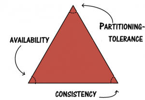
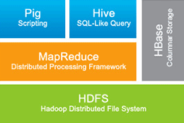

For some period of time I'm interested in Big Data. I've started programming with object oriented language, learned about relational databases, algorithms, data structures, how to make applications for web, desktop, various services, but initially wasn't thinking about what to do when application grows and how to handle complex moments related to distrubuting applications. Now almost everyone heard of the word Big Data, but almost nobody knows what does it mean exactly. There were also tonns of jokes about it.


The first question - what is big data? It is logical to suppose we should start with defining the concept. Yes - lots of data, and even more then lots of data. So, there should be a system to act as a storage. Really, there is no such a system, that can acomodate infinities of data just because it can. Data resides on some servers, and to be able to hold more data we need more servers. That's simple! Besides, storage should represent integrity and completeness of the data, despite it is stored in different places of a cluster (cluster is a group of nodes). When we already have storage there are expected to be some requests to it and the system should be able to handle them. It should also be reliable in sence of availability, guarantee that every request receives a response about whether it was successful or failed.
There is a term called "horizontal scaling", which means adding more machines, servers or nodes to the cluster for system to be more efficient. Here we assume that each machine we add is equal to another. Okay, we know that data is stored on our servers in the cluster, we can scale it and add more servers to be able to store more data in our distributed storage.
But what are our actions if it is required to save new data to the storage? How to manage this? Where to put data? How do we know that data is spread evenly and all our machines are equally loaded? Good questions. Different systems accomplish this task differently, but there is one efficient and popular approach called "sharding". In a few words, that mechanism desides on which machine current piece of data should be placed on. It works based on so called "sharding keys", that can be for example be calculated by range or using hash. Choosing sharding key is responsible and important task.
As in every system, even super cool big data storage can have errors and something can go in a way unexpected for us. We want our distributed system to be fault-tolerant and have some recovery mechanisms. What happens is one of our nodes with mega-important information goes down for some unknown purpose? How can we access the data on burnt machine? Here "replication" comes into the game and tries to save us. Relication is a feature that allows storing the same information not just on one node, but additionaty "replicates" this information on a couple of another machines for safety and to decrease risks of failure and unavailability of data.
We have reached the first and popular approach to Big Data problem - NoSQL. As Wikipedia says:
A NoSQL or Not Only SQL database provides a mechanism for storage and retrieval of data that is modeled in means other than the tabular relations used in relational databases. Motivations for this approach include simplicity of design, horizontal scaling and finer control over availability. ... NoSQL databases are finding significant and growing industry use in big data and real-time web applications
In RDBMS all the data we write to the database are checked to match the schema, so after defining the schema we are not allowed to insert something in another format then pre-defined schema. NoSQL approach is different and has schema-less or semistructured nature. For example MongoDB stores data in JSON/BSON (more on BSON). Really, It means the schema is embedded in the data. The advantage of such approach is in columns flexibility and flexibility of characteristics. For example you can insert a row with 3 columns first, and then insert one more row with 7 columns that are different from previous columns. At the same time that could be dangerous, because you are now responsible for what you are inserting. So, if you didn't find some column you were expected to have it's your own fault!
NoSQL databases can be one of the following categories:
- Graph
We know gold standards that guarantee reliability of relational database operations: Atomicity, Consistency, Isolation, Durability (ACID).
The pretty way to understand the behavior of a distributed system is the CAP theorem. The CAP theorem is based on the observation that a distributed system is governed by three fundamental characteristics:
-
Consistency.
The same characteristic is present in ACID as a C letter. Consistent operation leads a database from one consistent state into another consistent state. Consistent state means that there is no violation of any integrity constraints. -
Availability.
Every request should be aware of whether it was successful or failed. -
Partition tolerance.
The system continues to operate despite arbitrary message loss or failure of part of the system.
The theorem states that given the three fundamental characteristics of a distributed computing system, you may have any two but never all three. CAP provides us with a framework to make decisions regarding which tradeoffs must be made in system implementations.
The great power of RDBMS is the ability to provide consistency. But if to look a little closer, RDBMS provide availability on condition that there is connectivity between the RDBMS client and the RDBMS itself. So we conclude that the RDBMS does not provide partition tolerance - if there is no connection with client and RDBMS the system will not be able perform its duties. Thus, RDBMS is a CA system bacause it provides Consistency and Availability but not Partition tolerance. If we already know that one of there characteristics of the CAP theorem would be absent, it's reasonable to assume that distributed system can have some recovery mechanisms. Usually CAP is visualized like a triangle with verticies named C, A and P, like this:
And the distributed system should pick just one side of a triangle, covering two verticies and leaving one alone. For example if RDBMS are CA, MongoDB and HBase are CP, while Cassandra and CouchDB are AP. There are lots of discussions about CAP principle over the Internet, so you can read more from different sources.
So NoSQL is a storage, where you can save semi-structured data, perform various operations on it (i.e. reads, writes, filtering, aggregation.), almost any NoSQL database allows you to do sharding, horisontal scaling, replication, etc. Of course, each NoSQL store has its own features and qualities and when using one we should definitely explore them from start to end.
Usage of NoSQL
NoSQL databases usually have APIs and documentation for different languages you might want to use. For example, here you can find MongoDB drivers for different programming languages and here is a list of CQL drivers for Cassandra. You can easily find APIs for other NoSQL databases.
It's time to get familliar with one more awesome and exciting approach in Big Data world! Hadoop. Apache Hadoop is a framework for distributed processing of large data. It is not correct to say that Hadoop is just one integral thing, because it consists of several parts and has lots of frameworks that can be used along with it. Simplified anatomy of Hadoop looks like this:
-
HDFS is a distributed file system for Hadoop. The main philosophy of HDFS is "write once read many". HDFS files are called data blocks and are at least 64 MB size. HDFS is built on top of nodes, which can be of three categories: Name Node, Data Node and Secondary Name Node. Name node is one and only for the whole cluster, acts as a brain and stores metainformation about the filesystem. Data node resides on every machine and is a storage of HDFS. The job of secondary name node is to make the name node start up faster. Here, Name Node is a single point of failure, because if it goes down there is no brain in the filesystem and it won't be able to function properly. HDFS uses replication, you can configure replication rates to store the same piece of data on N other nodes. Being a file system, HDFS is inefficient in random read and write accees.
-
MapReduce is a computation or processing framework. It runs jobs. The task is to distribute the work across the HDFS. It accepts jobs through the JobTracker. There can be only one JobTracker per cluster, it is responsible for communication with the Name Node and mentoring TaskTrackers, that do their jobs on machines. MapReduce operation consists of two functions - Map and Reduce. The task of map function is to get input data, process it and generate output key/value pairs. Reduce function gets Map's output as an input, performs some actions based on some criteria and returns a smaller set of key/value pairs.
-
Hive is SQL-like query syntax to do some operations on HDFS or HBase to perform data warehousing operations, so it makes your life easier if you are familliar with SQL. Hive does well on bulk operations and is not suitable for info modification and updates. Remember the principle "write once read many".
-
Pig is a tool to operate data stored in HDFS or HBase. Pig consists of two parts, the first is a programming language PigLatin and the second is the runtime environment for language to execute.
-
HBase is a column-family NoSQL database on top of HDFS. It has transactional support, DML (inserts, updates, deletes) and allows to use almost limitless number of columns. HBase comes into play in the case of individual records lookups and updating data. HBase doesn't support joins and sometimes it is appropriate to use denormalization. Or instead, joins can be done in your application code or a map/reduce jobs.
There are also adjacent to Hadoop frameworks:
-
Mahout is a machine learning framework for Hadoop.
-
Squoop helps transferring data from RDBMS into Hadoop.
-
ZooKeeper tracks and monitors potential errors and conflicts while updates to ensyre and prove consistency across the cluster.
Usage of Hadoop
Java World
Hadoop is written in Java and it is quite easy to use it with Java/Scala and Linux platform. There are lots of instructions and tutorials how to get started, for example you can look here for Java API and here for documentation.
.NET
After some searching how to set up Hadoop cluster on Windows I understood that it is not as straitforward as I thought. Microsoft has its own approach how to do this. Hadoop is offered through HDInsight on Windows Azure. As it is written on Microsoft web site:
HDInsight makes Apache Hadoop available as a service in the cloud. It makes the MapReduce software framework available in a simpler, more scalable, and cost efficient Azure environment. HDInsight also provides a cost efficient approach to the managing and storing of data using Azure Blob storage.
There are two options:
-
Single-node Hadoop cluster to try Hadoop and for testing.
You would need Windows Server 2008 R2 64-bit or Windows Server 2012 64-bit. Windows 7 or 8 is not supported for our purposes.
Mandatory prerequisites:
- Microsoft Visual C++ 2010 Redistributable Package (64-bit).
- Microsoft .NET framework 4.0.
- Java Development Kit (JDK) 6u31.
- Python 2.7.
Download and Install Hortonworks Data Platform
Start Hadoop command prompt, it should open in hadoop installation directory by default. Anyway, we need to navigate to a directory higher then hadoop installation.
Run command "start_local_hdp_services" to start services and then "Run-SmokeTests" to run smoke tests.
- Also you are able to create Hadoop (HDInsight) cluster with Windows Azure. Microsoft web-site has pretty good articles for this task, look here, and there are also useful tutorial videos on channel9.
Here you can find .NET SDK for Hadoop.
If you are one of those awesome software engineers, who use F# - F# and Big Data section would be interesting for you.
Finally, interesting note
NoSQL and Hadoop are the two of the most mainstream solutions for so called "Big Data" and they are absolutely different, despite have kind of overlapping functionality. NoSQL is a database, it can be of different type (look above to know about the types). Hadoop is a distributed data procrssing framework.
Let's have a *sample* look at MongoDB, which is document-oriented NoSQL database, and at Hadoop. It doesn't mean that these two are designed for the same purposes, on the contrary - each of them has its own use case or they can be used together. The aim is to illustrate that every instrument has advantages and disadvantages and when deciding which one to use it is necessary to explore your problem and task accurately.
MongoDB stores data in JSON, easily handles data in non-standard formats, has good performance on real-time inserts, provides sharding and replication, has geospatial indexes, Map/Reduce can be used in MongoDB, but if the task is to do effective processing it can fail because of single-thread bottleneck per node.
Hadoop stores data on its HDFS filesystem in blocks, in any format, at the same time we have an opportunity to store data in HBase - NoSQL database based on HDFS, which is aslo scalable and similar to MongoDB. Hadoop is most suitable for batch processing, i.e. huge logs processing, when single machine can't handle it, for Extract-Transform-Load operations, processing complex sequences, is able to do machine learning and data analysis using its frameworks.
Before desiding to use Hadoop answer to the following questions yourself:
- Do you really need to store terrabytes and petabytes of data?
- Do you have stable inflow of data?
- What response time do you expect, is it necessary to have real-time response?
- What kind of operations would you perform more on your data - random access or bulk operations with batch reads and writes?